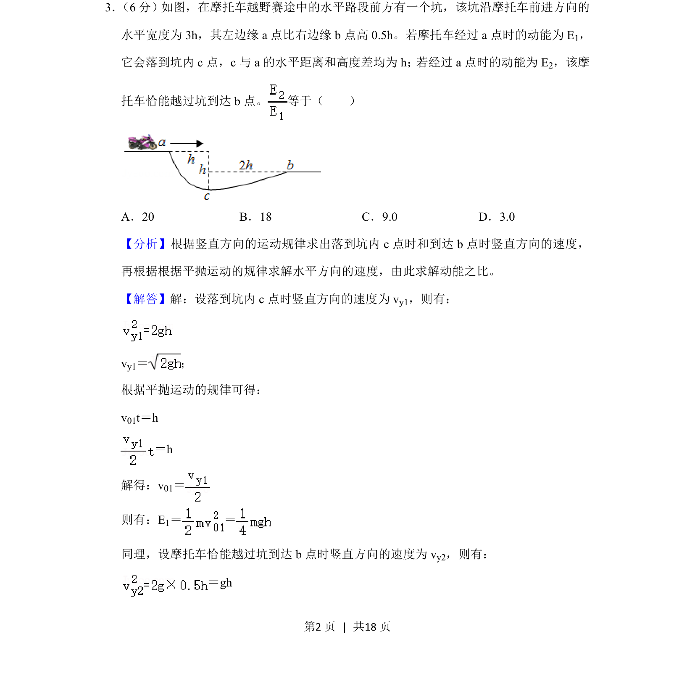
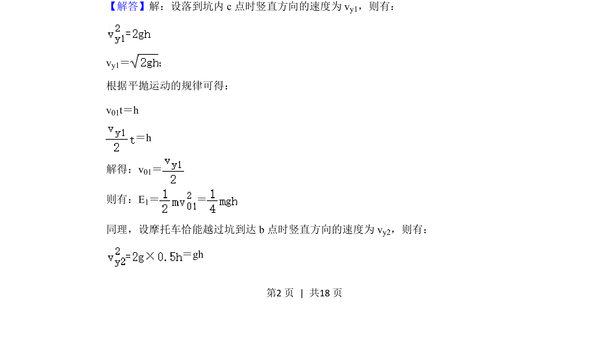
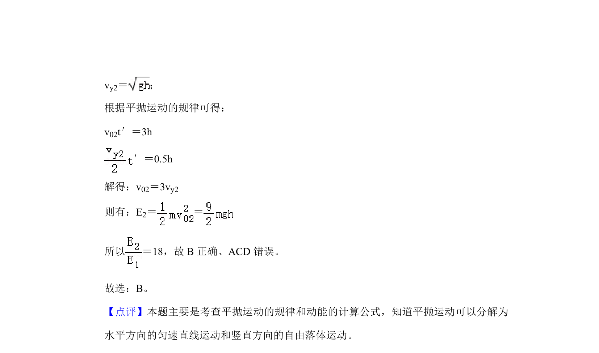

考点：平抛运动 动能 运动的合成与分解

该题考查平抛运动中水平与竖直分运动的规律及动能计算，结合几何关系求解动能之比。


📄 原 PDF 第 2 页：
素材/真题/吉林/2008-2024·（吉林）物理高考真题/2020年高考物理试卷（新课标Ⅱ）（解析卷）.pdf
3． （6分）如图，在摩托车越野赛途中的水平路段前方有一个坑，该坑沿摩托车前进方向的 水平宽度为3h，其左边缘a点比右边缘b点高0.5h。若摩托车经过a点时的动能为E 1， 它会落到坑内c点，c与a的水平距离和高度差均为h； 若经过a点时的动能为E 2，该摩 托车恰能越过坑到达b点。 等于（ ） A．20 B．18 C．9.0 D．3.0
【分析】根据竖直方向的运动规律求出落到坑内c点时和到达b点时竖直方向的速度， 再根据根据平抛运动的规律求解水平方向的速度，由此求解动能之比。 【解答】解：设落到坑内c点时竖直方向的速度为v y1，则有： vy1＝ ； 根据平抛运动的规律可得： v01t＝h ＝h 解得：v01＝ 则有：E1＝ ＝ 同理，设摩托车恰能越过坑到达b点时竖直方向的速度为v y2，则有： ＝gh